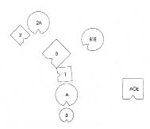
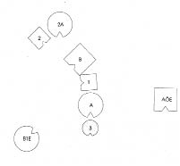
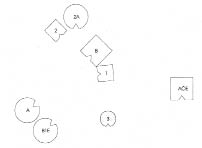
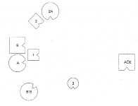
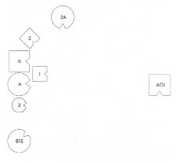

Dizim: İkisi de çocukken ölen sakat erkek kardeş ve varlığı gizlenen üvey erkek kardeş
UTE Bana mezardan söz ettiğinden beri açıklık kazanıyor: Benim ölümle bağlarım çok yönlü ve güçlü…
HELLINGER Bunu bilmek istemiyorum.
UTE Bu konuda daha fazla konuşmak istememiştim zaten. Yalnızca, aklıma daha önce hiç düşünmediğim bir fikir geldi, dün oluştu bu kafamda. Ağabeyimden başka bir de babamın evlilik dışı çocuğu olan bir üvey kardeşim vardı. Ağabeyim ben altı aylıkken ölmüş. Ağır beyin özürlüymüş. Ama babamın o da oğlan olan ve erken ölen evlilik dışı çocuğunu hiç düşünmemiştim. Sen başkalarını ele alırken ilk kez geldi aklıma.
HELLINGER Bu üvey kardeş en büyük çocuk mu?
UTE Hayır. İkimizin arasında. Erkek kardeşim en büyük, sonra üvey kardeş geliyor, ardından da ben. En küçükleri benim.
HELLINGER Üvey kardeşin annesine ne olmuş?
UTE Hiçbir fikrim yok. Sonradan evlenmiş. Babamın sekreteriymiş. Bütün bildiğim, sonradan durumunun iyi olduğu. Bunu ancak babamın ölümünden sonra öğrendim.
HELLINGER Böyle bir durumda sistemik düzen, erkeğin ilk karısından ayrılarak çocuk sahibi olduğu kadınla evlenmek zorunda oluşudur. Düzen bu olurdu. Annenin önceliğini koruması ve erkeğin onunla kalması ile bu ikinci kadına karşı haksızlık yapılmış.
UTE Annem çocuğu almak istemiş.
HELLINGER Hayır, hayır, bu olmaz! Onun çocuk üzerinde hiçbir hakkı yok.
UTE Hayır, hakkı yok.
HELLINGER Önce köken aileni diz. Bir bakalım.
Ute köken ailesini dizmeye başlar.
HELLINGER Ebeveyninden biri daha önce evli ya da nişanlı mıydı?
UTE Evet, babam. Babamın bir ilk karısı varmış. Ben bütün bunları onun ölümünden sonra öğrendim.
HELLINGER Bu evlilikten çocukları olmuş mu?
UTE Hayır. Annemin de babamdan önce çok önemli bir ilişkisi varmış. Adam kendisinden 25 yaş büyükmüş.
HELLINGER Bu ikisi de gerek bize.
Annen ya da baban çocuğun zarar görmesinden ötürü kendisini ya da diğerini suçlamış mı?
UTE Sanıyorum annem. Doğumdan önce ebenin verdiği ilaçları almış; sakinleşmeye ihtiyacı olduğu için galiba. Öyle sanıyorum ki bu ilaçlar yüzünden suçluluk duyuyordu.
HELLINGER Doktorlar ne diyor buna? Bu ilaçların beyin hasarına yol açması mümkün mü?
DOKTOR Doğum gecikmişse, evet.
UTE Çocuk içerde kalmış, olduğu gibi içerde kalmış. Annem bunu sonradan inkâr etti.
1. Resim

B Baba
A Anne
1 İlk çocuk, erken ölen sakat oğul
2 Babanın çocuğu, erken ölen evlilik dışı oğul
3 Üçüncü çocuk, kız (=Ute)
2A İkinci çocuğun annesi
1K Babanın ilk karısı
AÖE Annenin önceki erkek arkadaşı
UTE Birden pek çok insan oldu ortalıkta, bense her zaman çok yalnızdım.
HELLINGER Baba nasıl?
BABA Kendimi hiç iyi hissetmiyorum. Kızgınım ama bir açmaz bu. Ne ileri gidebilirim sanki ne geri.
HELLINGER Anne nasıl?
ANNE Korkunç. Çok kötü. Çok kötü.
HELLINGER Ölen en büyük oğul nasıl?
İLK ÇOCUK İyi. İkisinin arasında kendimi geniş, ağır ve sıcak hissediyorum. Başka bir şeye ihtiyacım yok.
HELLINGER Evlilik dışı çocuğun annesi nasıl?
İKİNCİ ÇOCUĞUN ANNESİ Çocuğumla biraz yalnız bırakılmış. Çok sorumluluk.
HELLINGER Evlilik dışı olan ölmüş çocuk nasıl?
İKİNCİ ÇOCUK Çok üzgün. Gözlerim yaşarıyor. İyi değilim.
HELLINGER Babanın ilk karısı nasıl?
BABANIN İLK KARISI Tuhaf. Bir yandan hiçbir alıp vereceğim olmasın istiyorum, hiç. Öte yandan, olacaksa da bütün bu insanların büyükannesi olmak.
HELLINGER Annenin önceki erkek arkadaşı nasıl?
ANNENİN ÖNCEKİ ERKEK ARKADAŞI Burada, sağ tarafımda büyük bir sıcaklık var, sanki sevgiyle okşanıyormuş ya da ben okşuyormuşum gibi. O tarafta büyük bir çekim hissediyorum, aslında yalnızca o kadına karşı. Diğeri benim için herhangi bir anlam ifade etmiyor.
HELLINGER Ute’nin temsilcisine Kız nasıl?
ÜÇÜNCÜ ÇOCUK Sanki bölünmüş gibiyim. Bir yanım, sağ tarafım, sıcak, arka taraftan da öyle. Diğer yanım buz gibi ve kendimi onun avucunda hissediyorum.
Hellinger babanın ilk karısını diğerinin karşısına yerleştirir.
2. Resim

HELLINGER Baba şimdi nasıl?
BABA Onun şimdi görüş alanım içinde olmasını daha iyi buluyorum. Arkamda olması hiç iyi değildi.
ANNE Burada hâlâ kötü ama öncekinden çok daha iyi.
ÜÇÜNCÜ ÇOCUK Bakışımı birisine çevirebildiğime seviniyorum.
HELLINGER İlk eş nasıl?
BABANIN İLK KARISI Arkada donuyordum, şu anda ısındı. Artık ilgilenmeye başladım. Arada ilişki var şimdi.
Hellinger anneyi babanın ilk karısının yanına yerleştirir.
3. Resim

BABA Daha iyi. Şimdi karım ilk kez benim için görünür hale geldi. Daha önce bu ne istiyor ki diye düşünüyordum. Ona karşı bir şey hissetmiyorum ama onun için de bir duygu yok içimde.
ÜÇÜNCÜ ÇOCUK Daha fazla nefes alıyorum.
İLK ÇOCUK Benim için fark etmiyor.
Hellinger resmi değiştirir ve ölen en büyük oğlu sırtını onlara dayayacak şekilde ebeveyninin önüne, yere yerleştirir.
4. Resim

HELLINGER Bu en büyük oğul için nasıl?
İLK ÇOCUK Uygun.
HELLINGER Anne için nasıl?
ANNE Üzülüyorum.
Hellinger ölen evlilik dışı oğlu baba, kız ve kızın annesi arasına yerleştirir.
5. Resim

HELLINGER Baba şimdi nasıl?
BABA Tuhaf. Evlilik dışı çocuğun burada, yanımda durması üzerimde daha ziyade baskı yaratıyor. Yerdeki oğul ile tamam. Kadınla aramda oğulla ilgilenme amacını güden bir ilişki var. Sempati var ona karşı içimde ama bu ilişkide yolunda olmayan bir şeyler olduğunu hissediyorum yine de. Ama bunun ne olduğunu bilmiyorum.
HELLINGER Sistemik açıdan ilişki bitmiş.
Ute’nin temsilcisine Kız nasıl?
ÜÇÜNCÜ ÇOCUK İyi değil.
Hellinger çözüm resmini değiştirir.
6. Resim

HELLINGER Kız burada nasıl?
ÜÇÜNCÜ ÇOCUK Daha iyi.
ANNE Benim için de daha iyi.
HELLINGER Ölmüş evlilik dışı oğul nasıl?
İKİNCİ ÇOCUK Yeniden burada, annenin yanında olduğuma seviniyorum. Orada, babanın yanında çok yalnızdım.
ÜÇÜNCÜ ÇOCUK Bende o bölünmüşlük duygusu kayboldu.
HELLINGER Evlilik dışı çocuğun annesi nasıl?
İKİNCİ ÇOCUĞUN ANNESİ Çok iyi. Demin oğlum o kadar uzakta olduğu için üzgündüm. Ama şimdi daha iyi. Çok iyi böyle.
ANNE Bu beni üzüyor.
HELLINGER Babanın ilk karısı nasıl?
BABANIN İLK KARISI Bunlarla bir ilgim kalmadı artık.
HELLINGER Daha sonra yaşananların burada öyle bir ağırlığı var ki önceki ilişki artık hiçbir rol oynamıyor. Annenin önceki erkek arkadaşına Senin için bir önemi var mı?
ANNENİN ÖNCEKİ ERKEK ARKADAŞI Bedenim sıcak, arada bir o tarafa bakıyorum da ama artık bitti.
HELLINGER Ute’ye Kendi yerine geçmek ister misin?
Ute yerine geçer ve uzun süre herkesi gözden geçirir.
UTE Burada kendimi iyi hissetmemi sağlayan şey, sağ ve sol tarafımda ilişki içinde olmam. Erkekler arasında durmak da iyi geliyor. Ben annesinin çocuğuydum. Benimle ilgilenmektense annemin babamın yanında yer almasının ona çok daha iyi geleceğini sanıyorum. Benim inanılmaz bulduğum, beni temsil eden kişinin bu bölünmeyi hissetmiş olması. Gerçekten de çok kere bu bölünmeyi hissettim ben, pek çok kere. Ya tam ortamdan ayrılmış ve üstle alt arasında ya da gerçekten de baştan ayağa sol ve sağ tarafım arasında. Ve solumda bir de bu erkek kardeşimin olması yepyeni bir şey benim için. Bunu ilk kez görüyorum. Önceki gibi üzücü ama şu anda bu duygu o kadar da hakim değil üzerimde.
HELLINGER Artık huzur var.
Ute usulca baba ve iki erkek kardeşi okşar.
UTE Şimdi iyi.
HELLINGER Gruba Size bir öykü daha anlatayım. Adı: